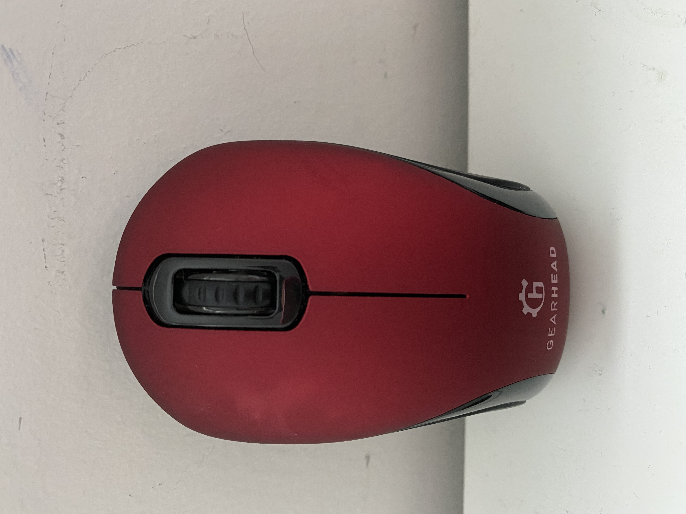
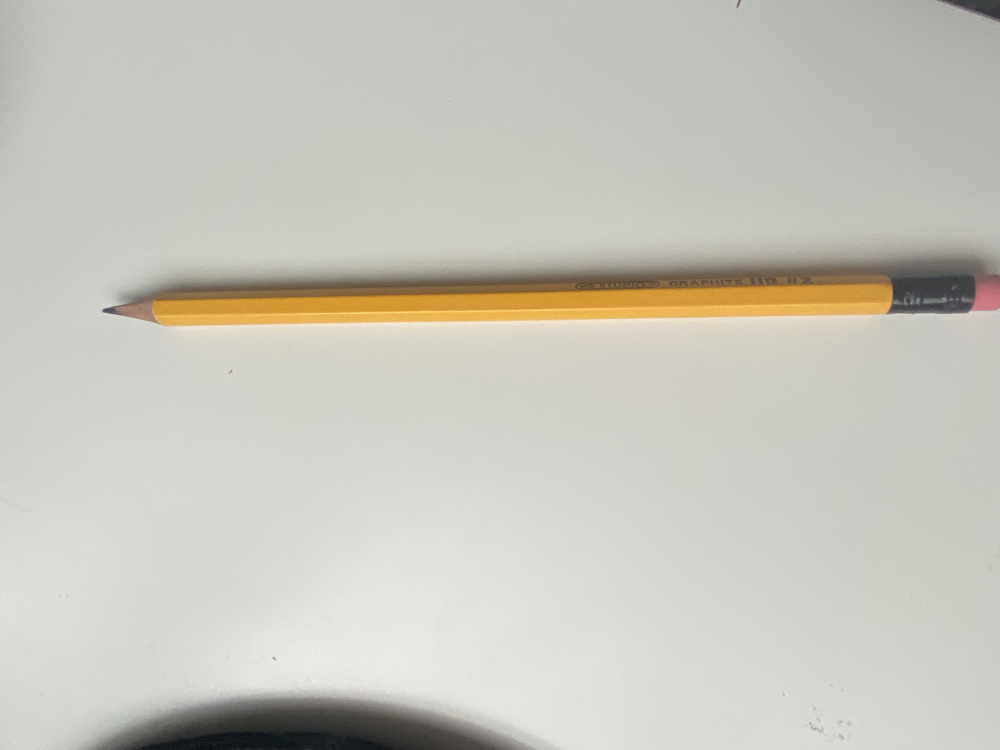
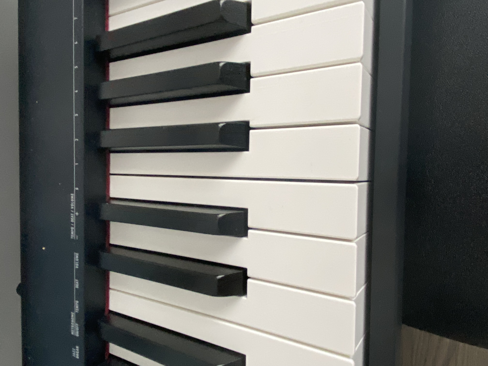

Case Study
I think Wolfram is better
1.Test Image

Output on Wolfram-computer mouse
Output on MobileNet-mouse, computer mouse
2.Test Image

Output on Wolfram-Pencil
Output on MobileNet-candle, taper, wax light
3.Test Image

Output on Wolfram-keyboard
Output on MobileNet-upright, upright piano